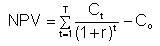

The difference between the present value of cash inflows and the present value of cash outflows. NPV is used in capital budgeting to analyze the profitability of an investment or project.
NPV analysis is sensitive to the reliability of future cash inflows that an investment or project will yield.
Formula:
In addition to the formula, net present value can often be calculated using tables, and spreadsheets such as Microsoft Excel.
NPV compares the value of a dollar today to the value of that same dollar in the future, taking inflation and returns into account. If the NPV of a prospective project is positive, it should be accepted. However, if NPV is negative, the project should probably be rejected because cash flows will also be negative.
For example, if a retail clothing business wants to purchase an existing store, it would first estimate the future cash flows that store would generate, and then discount those cash flows into one lump-sum present value amount, say $565,000. If the owner of the store was willing to sell his business for less than $565,000, the purchasing company would likely accept the offer as it presents a positive NPV investment. Conversely, if the owner would not sell for less than $565,000, the purchaser would not buy the store, as the investment would present a negative NPV at that time and would, therefore, reduce the overall value of the clothing company.
{kind=link}